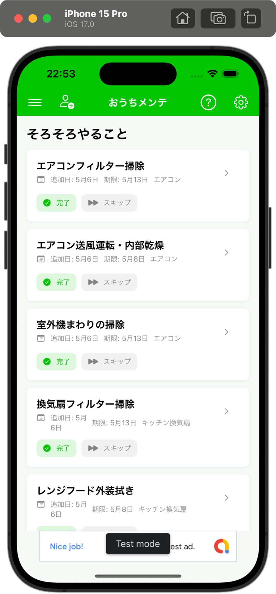
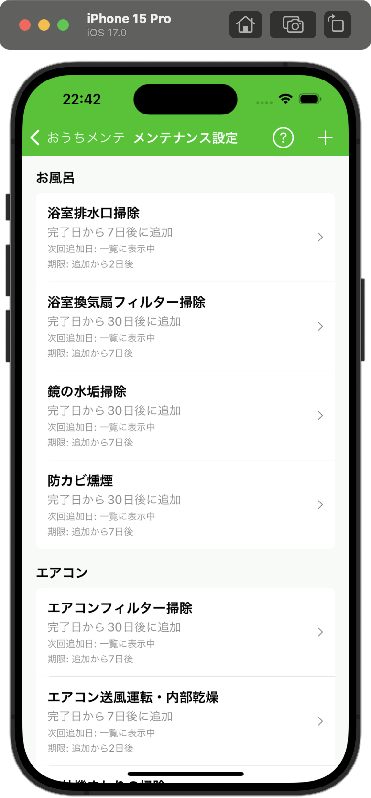
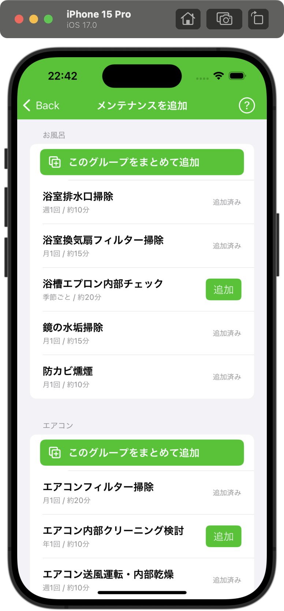
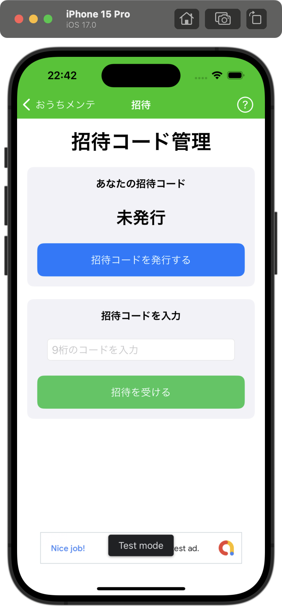

おうちメンテでできること
場所ごとのメンテナンス頻度や、必要なもの、手順をまとめて確認できます。
メンテナンスタスクを管理
定期的にやる掃除や点検を、家の場所ごとに整理できます。
推奨頻度を確認
エアコン・お風呂・排水口など、項目ごとの目安を見返せます。
手順や必要なものを確認
掃除前に何を用意するか、どの順番で進めるかを確認できます。
実際の画面




こんな人におすすめ
- 家のメンテをつい後回しにしてしまう
- 掃除の頻度や手順を毎回調べ直している
- 家族と共有しやすい、シンプルな管理方法がほしい